CLAUDIA NANEZ
About
I am a first year master’s student in the dual MA/MSc Innovation Design Engineering (IDE) program offered jointly by Imperial College London and the Royal College of Art. In May of 2024, I graduated from Harvey Mudd College with a Bachelor of Science in Engineering and a minor in Studio Art.
With a passion for combining technical innovation with creative design thinking, I bring a unique perspective to solving complex challenges at the intersection of engineering and design.
When I’m not in the studio, I love to make music, run, and be outdoors!
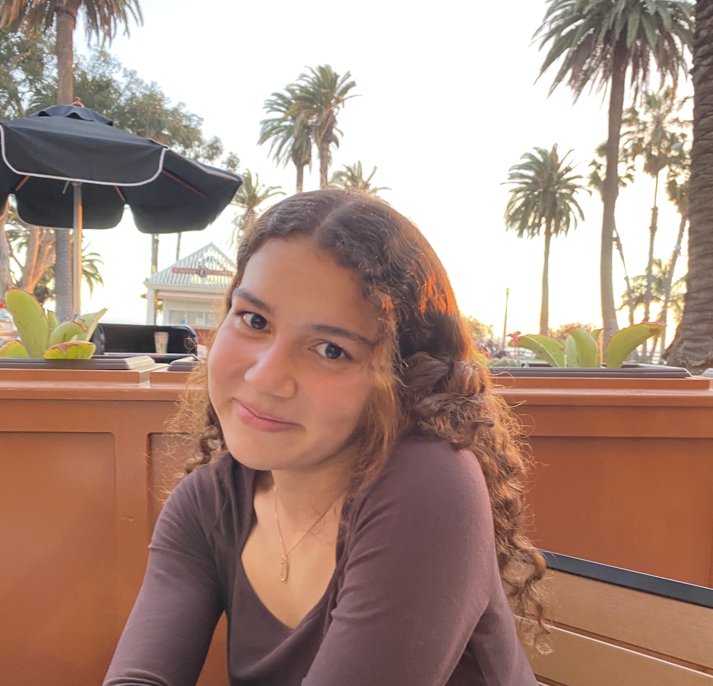
Education
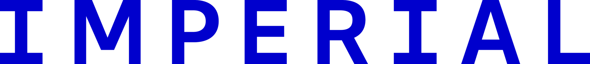
Imperial College London
MA Innovation Design Engineering
September 2025 - September 2027
Royal College of Art
MSc Innovation Design Engineering
September 2025 - September 2027
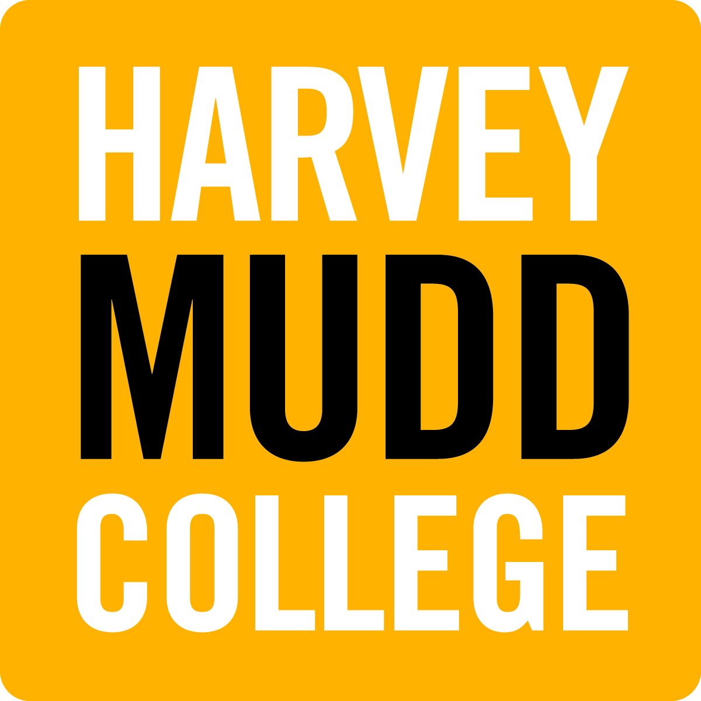
Harvey Mudd College
BS Engineering, Minor in Studio Art
August 2020 - May 2024
Professional Experience
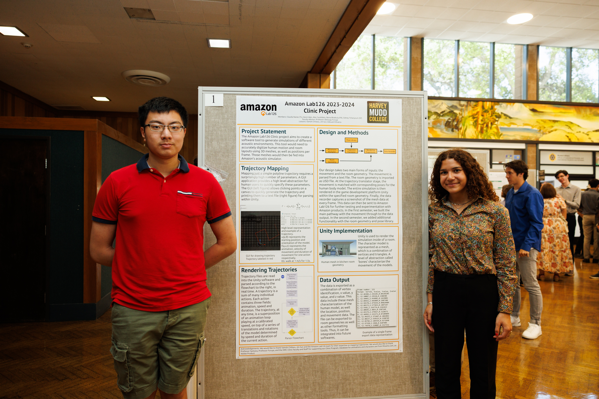
Me and my team mate next to our poster board during Clinic Presentation Day
Amazon Lab126
Harvey Mudd College Clinic Team Lead
August 2023 - May 2024
- Decreased workflow time by 50% by developing python script to convert information from an audio file to 3D human models
- Led a team of three students, coordinated weekly liaison meetings, managed project reporting, and delivered impactful presentations to stakeholders
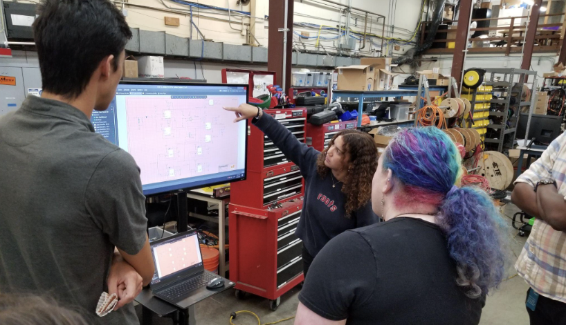
Presenting my schematic to the Motiv team at the end of the summer
Motiv Electric Trucks (Now Workhorse)
Research and Development Intern
June 2023 - August 2023
- Designed architecture for dual AC and DC power distribution to reduce the charging time of latest electric mid sized vehicles
- Developed printer circuit board (PCB) design from ideation to production, from initial schematic drawings to final product
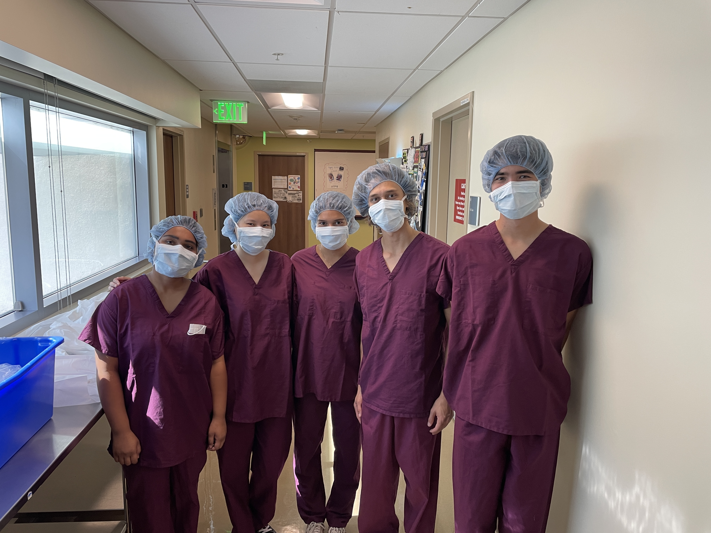
Me (center) and my teammates at the City of Hope treatment center conducting patient interviews
City of Hope
Harvey Mudd College Clinic Team Member
August 2022 - December 2022
- Built an implantable sensor to be worn by cancer patients to monitor their vitals and drastically improved quality of care
- Collaborated with four students on the ideation, research, and assembly of a sensor equipped with pulse, body temperature, blood pressure, and pedometer measurement capabilities
- Created software infrastructure to filter the data collected by the sensor, analyze the trends, and send to health care providers
- Led Bill of Materials creation, managed the acquisition and assembly of components, and developed the PCB in Autodesk EAGLE
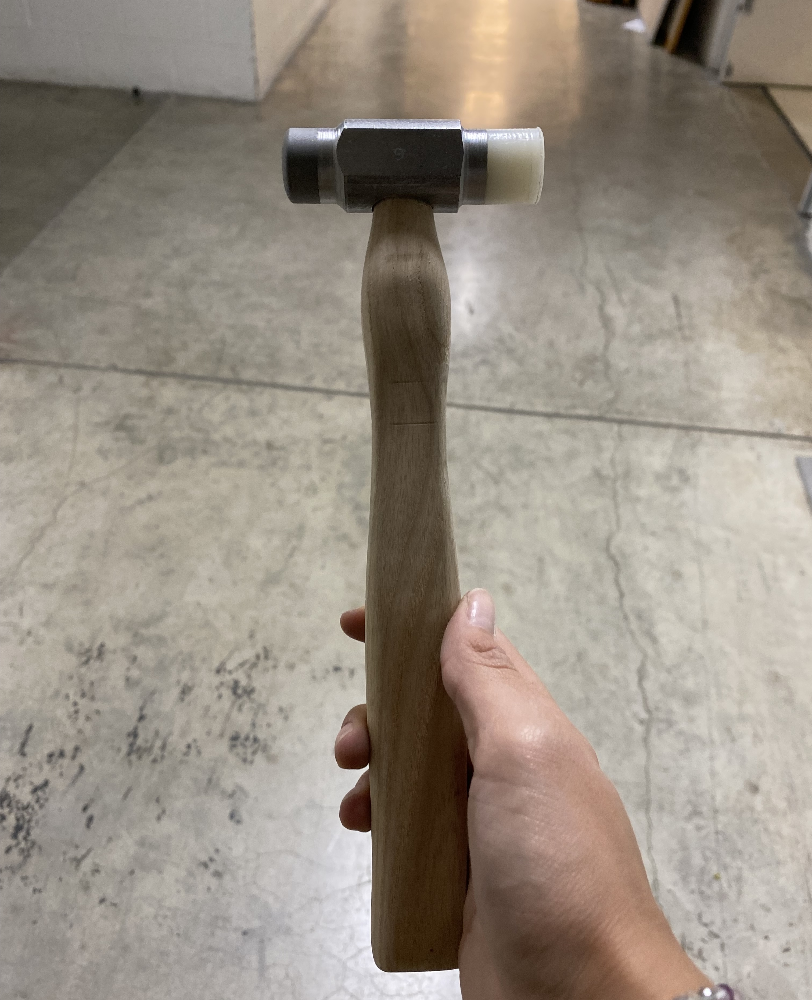
My hammer that all Engineers make and that machine shop proctors instruct
Harvey Mudd College Machine Shop
Machine Shop Proctor
January 2022 - May 2024
- Co-supervised up to 12 students per shift in a student-run machine shop, ensuring safety, efficiency, and adherence to proper machining protocols
- Instructed students on how to properly use machines such as the mill, lathe, and vertical band saw for coursework and individual projects
- Mentored 50 engineering students in the making of a hammer for the required Engineering and Design course every semester
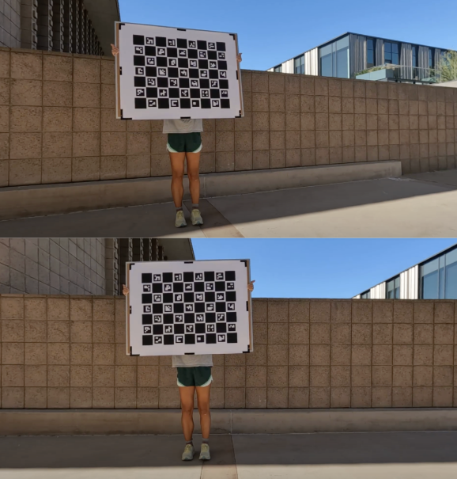
Me holding the customized checkerboard we used during camera calibration.
Harvey Mudd College Lab for Autonomous and Intelligent Robotics (LAIR)
Machine Learning Resarch Assistant
January 2022 - January 2023
- Established end-to-end workflow in DeepLabCut to extrapolate data from recording skateboarders using 3D calibration
- Performed inverse dynamics to measure kinematic forces exerted on joints for a final research report from the acquired data
Projects
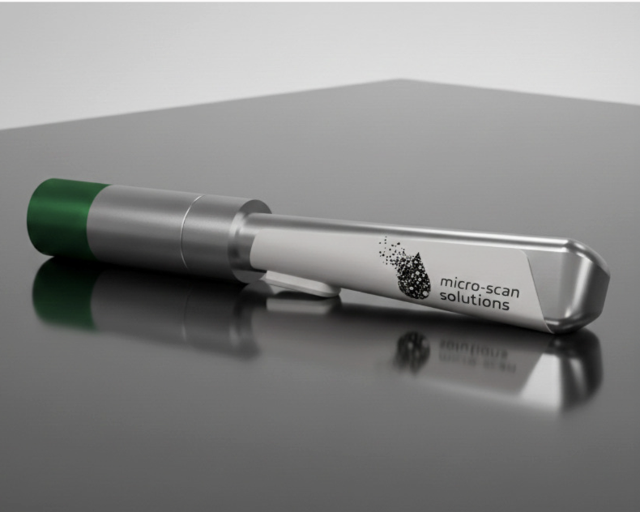
Your tiny caption text here
Microplastic Detector
IDE Transdsciplinary Practices Module Final Project
November - December 2025
- Designed architecture for dual AC and DC power distribution to reduce the charging time of latest electric mid sized vehicles
- Developed printer circuit board (PCB) design from ideation to production, from initial schematic drawings to final product
- Optimized production costs by aligning design requirements, managed the component library, and maintained accurate Bill of Materials (BOM)
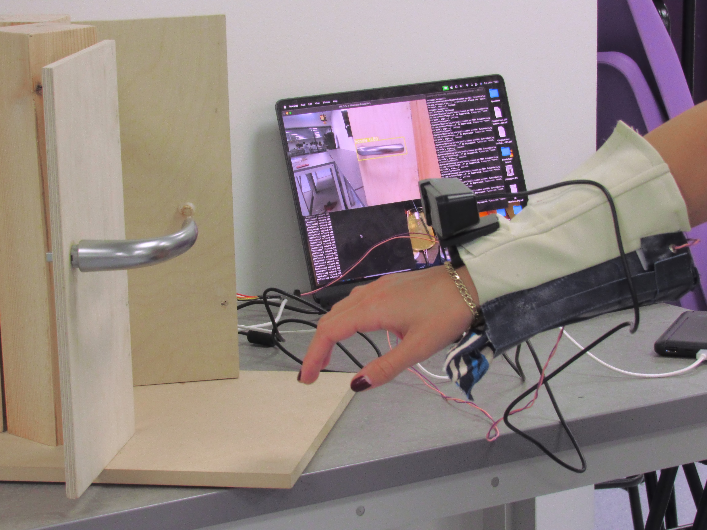
Your tiny caption text here
Door Handle Hero
IDE Cyber Physical Systems Module Final Project
October - November 2025
- Co-supervised up to 12 students per shift in a student-run machine shop, ensuring safety, efficiency, and adherence to proper machining protocols
- Instructed students on how to properly use machines such as the mill, lathe, and vertical band saw for coursework and individual projects
- Mentored 50 engineering students in the making of a hammer for the required Engineering and Design course every semester
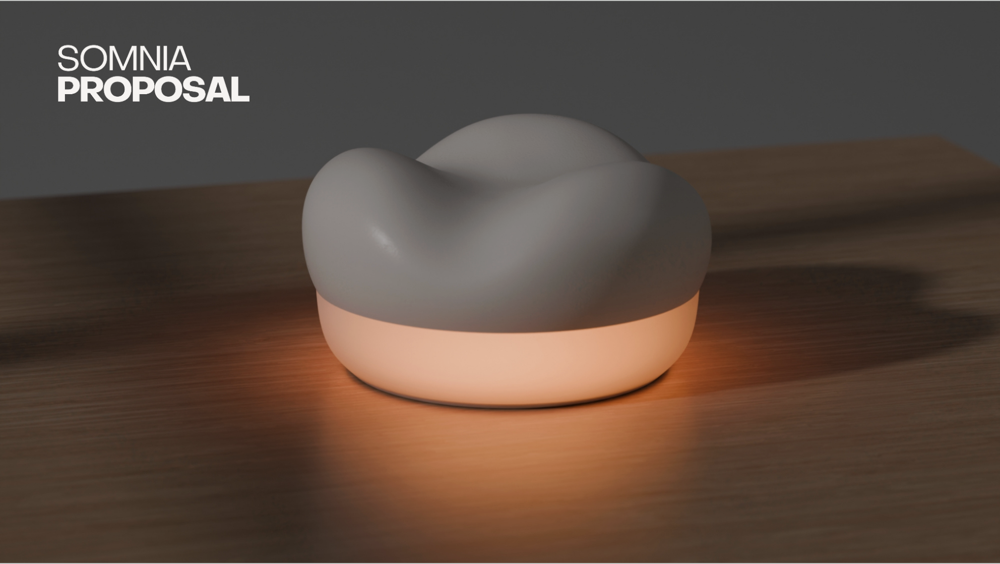
Your tiny caption text here
Somnia Sleep Collection
IDE Fundamentals Module Final Project
September - October 2025
- Established end-to-end workflow in DeepLabCut to extrapolate data from recording skateboarders using 3D calibration
- Performed inverse dynamics to measure kinematic forces exerted on joints for a final research report from the acquired data
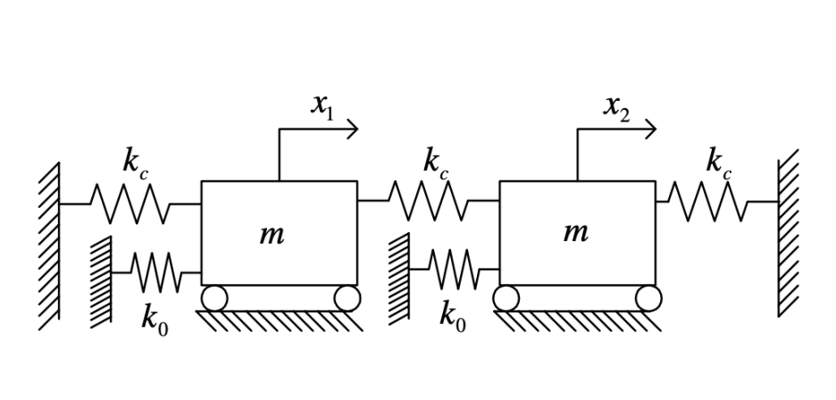
Your tiny caption text here
Bladed Disk Simulation
E171: Dynamics of Elastic Systems Final Project
October 2023 - December 2023
- Decreased workflow time by 50% by developing python script to convert information from an audio file to 3D human models
- Improved the spatial audio performance of the Echo by simulating human trajectories in model rooms to observe sound flow
- Led a team of three students, coordinated weekly liaison meetings, managed project reporting, and delivered impactful presentations to stakeholders
Your tiny caption text here
Life Cycle Analysis of Grand and Electric Pianos
Sustainable Design Final Project
March 2024 - May 2024
- Decreased workflow time by 50% by developing python script to convert information from an audio file to 3D human models
- Improved the spatial audio performance of the Echo by simulating human trajectories in model rooms to observe sound flow
- Led a team of three students, coordinated weekly liaison meetings, managed project reporting, and delivered impactful presentations to stakeholders
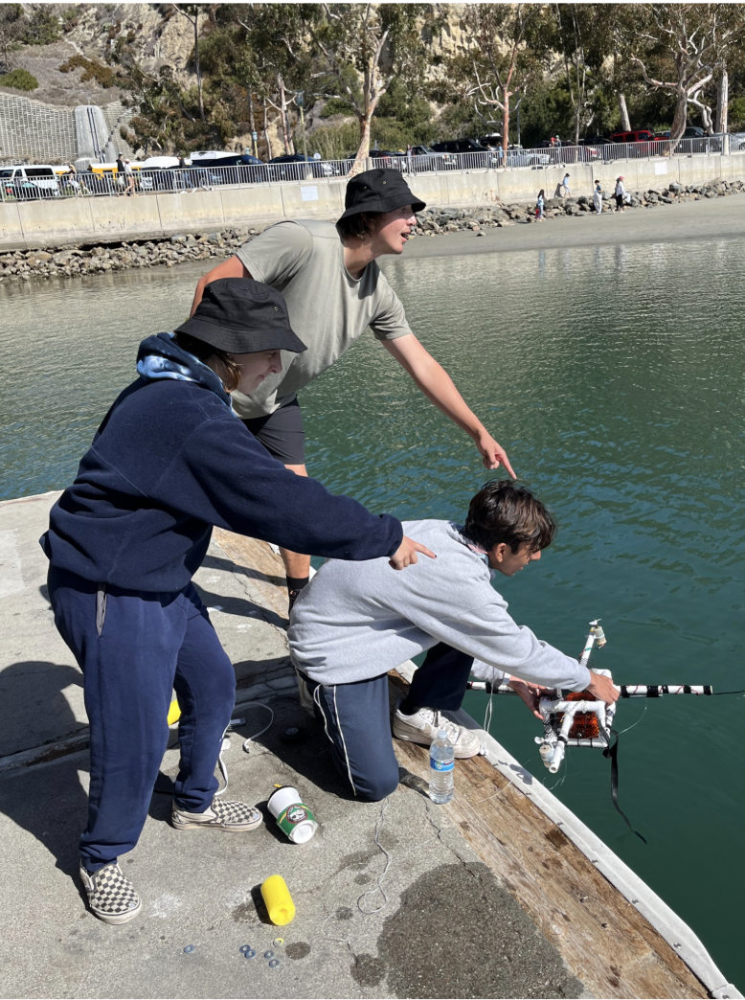
My teammates with our final AUV during deployment at Dana Point.
Autonomous Underwater Vehicle
E80: Experimental Engineering Final Project
January 2022 - May 2022
- Decreased workflow time by 50% by developing python script to convert information from an audio file to 3D human models
- Improved the spatial audio performance of the Echo by simulating human trajectories in model rooms to observe sound flow
- Led a team of three students, coordinated weekly liaison meetings, managed project reporting, and delivered impactful presentations to stakeholders
Contact
Thanks for stopping by! Let’s connect